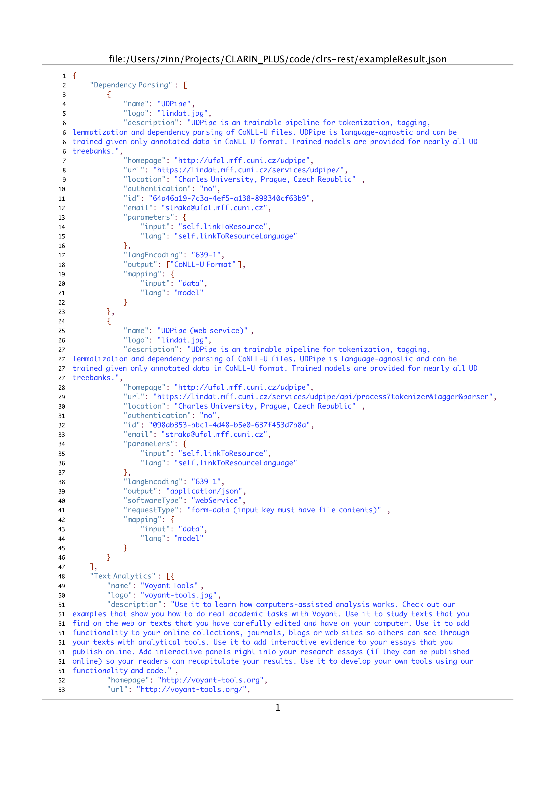
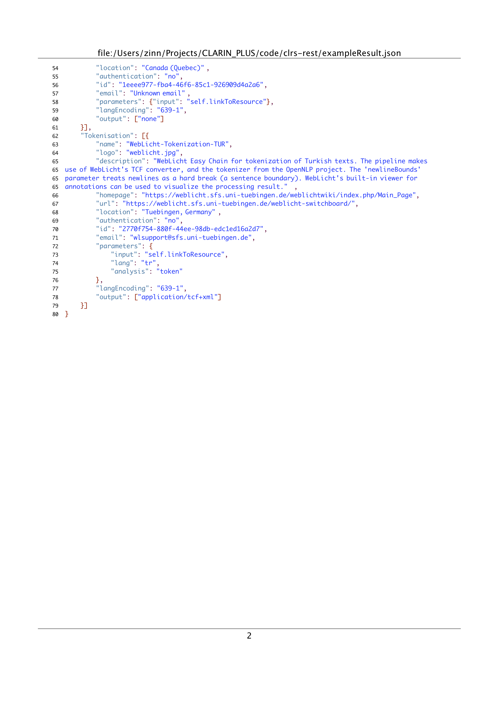

GET /: returns this html page.GET /api: returns this html page.GET /getAllTools: returns a JSON document with descriptions of all tools registered with the switchboardGET /getTools?language=[LANG]&includeWS=[BOOL]&mimetype=[MIMETYPE]&sortBy=[SORT]&includeToolsReqAuth=[BOOL]: returns a JSON document with descriptions of all tools registered with the switchboard that match the designated values supplied by the arguments (any order permitted):
[LANG]a language identifier following ISO 639-3[MIMETYPE]a mimetype identifier following the classification of IANA.org[SORT]one of 'tasks' or 'tools' (without quotes)[BOOL]one of 'true' or 'false' (without quoteshttps://weblicht.sfs.uni-tuebingen.de/clrs-rest/api/getTools?language=eng&includeWS=true&mimetype=application%2Fpdf&sortBy=tasks&includeToolsReqAuth=true
Retrieve all tools capable of processing English text encoded in PDF format. Also include web services, and tools that require authentication. Sort the result by tasks.
https://weblicht.sfs.uni-tuebingen.de/clrs-rest/api/getTools?language=tur&includeWS=false&mimetype=text%2Fplain&sortBy=tools&includeToolsReqAuth=true
Retrieve all tools capable of processing Turkish plain text documents. Do not include web services, but include tools requiring authentication. Sort the result by tools.
The second call from above yields the following json document (with indentation). When rendered in PDF, with added line numbers, this looks like this:
 